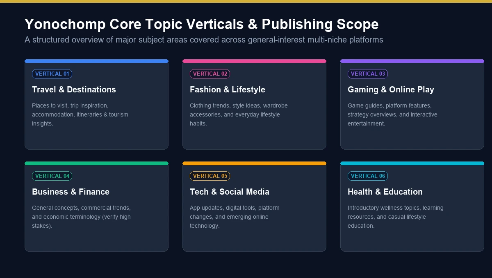
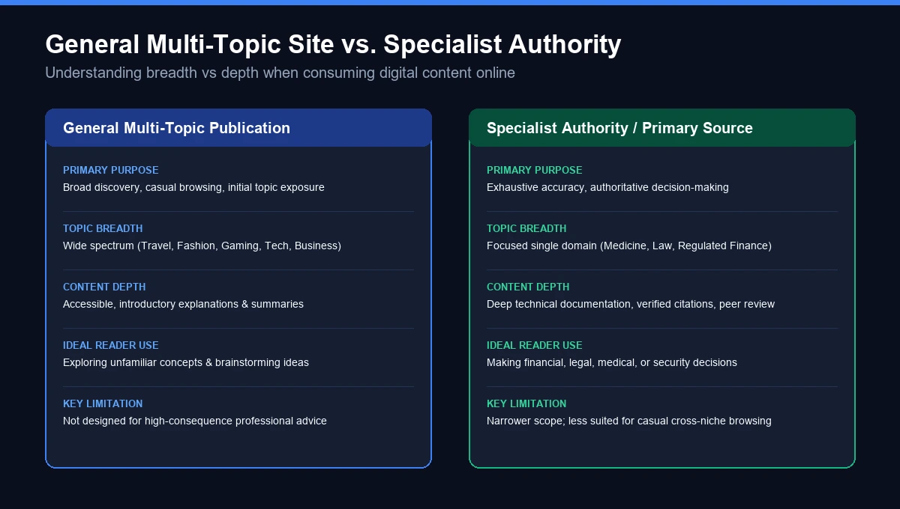
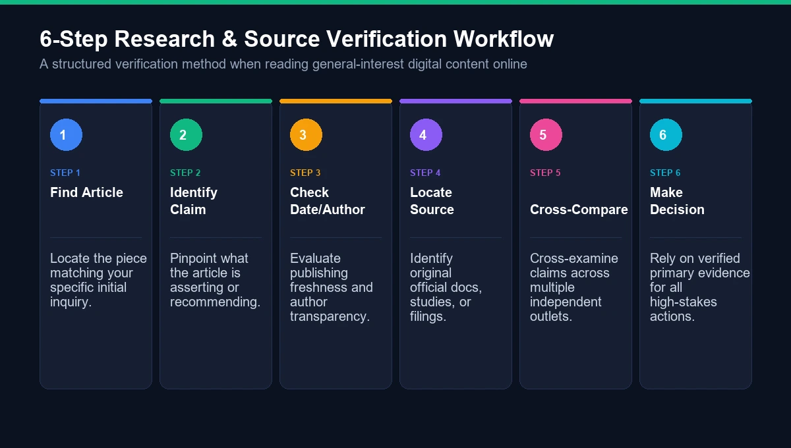

If you searched for yonochomp com, you are probably trying to figure out what the website actually is, what kind of content it publishes, and whether it is worth visiting.
That is a reasonable question. Yonochomp.com is not immediately recognizable as a major news organization, software platform, online store, or social network. Instead, its public-facing presence is closer to a general-interest blogging and publishing website, with articles covering a range of subjects.
The site's broad topic structure is one reason it can be difficult to categorize. Visitors may encounter articles related to travel, fashion, gaming, business, technology, finance, health, education, entertainment, and other areas.
This guide takes a practical look at Yonochomp com: what it is, how its content is organized, what readers can expect, how to evaluate its articles, and what to consider before relying on information published there.
What Is Yonochomp com?
Yonochomp com refers to the website available at the Yonochomp.com domain.
Based on its publicly visible content and navigation, it is best described as a multi-topic content website or general-interest blog rather than a specialized service.
That distinction matters.
A specialist website normally concentrates on one subject. For example, a technology publication may cover software, smartphones, artificial intelligence, cybersecurity, and hardware almost exclusively. A travel publication may focus on destinations, hotels, flights, itineraries, and travel advice.
Yonochomp.com takes a broader approach.
Its content structure includes multiple subject areas, meaning the same visitor can find articles about lifestyle-oriented topics alongside travel, business, fashion, gaming, or other subjects.
This makes the website more similar to a digital magazine or broad publishing site than to a single-purpose online tool.
Yonochomp com at a Glance
Area | What to Know |
|---|---|
Website | Yonochomp.com |
Type | General-interest content/blogging website |
Publishing model | Multi-topic articles |
Audience | General internet readers |
Topics | Travel, fashion, gaming and other broad subjects |
Access | Public web content |
Main purpose | Information, discovery and general reading |
Best use | Topic discovery and casual research |
Important limitation | Individual articles should be evaluated for authority and freshness |
The site's public pages have also been examined by third-party publications, which generally describe Yonochomp.com as a broad, multi-topic publishing website rather than a software or ecommerce platform.
Why Are People Searching for “Yonochomp com”?
The search phrase “yonochomp com” is primarily a navigational query.
Someone may have:
- Seen Yonochomp.com mentioned somewhere else
- Found one of its articles in a search result
- Received a link to the website
- Come across the domain while researching another topic
- Wanted to know whether the website is legitimate
- Wanted to understand what kind of website it is
- Been looking for information about its categories or articles
That means a useful page targeting this keyword should answer the basic question quickly instead of forcing the reader through several paragraphs before explaining the website.
At the same time, searchers often have a second question:
“Can I trust what I find there?”
That is where simply describing the website is not enough.

What Kind of Content Does Yonochomp.com Publish?
Yonochomp.com follows a broad publishing model.
Third-party examinations of the site have identified topic areas including fashion, travel, business, finance, health, education, entertainment, gaming, technology, sports, automotive, real estate, social media and lifestyle-related subjects. However, the presence of a category in navigation does not necessarily mean that the category has a large or continuously updated archive.
The distinction between listed categories and actively populated categories is important when evaluating a multi-niche website.
Travel
Travel content can cover destinations, places to visit, tourism-related information, accommodation, transportation and travel ideas.
A general website can be useful for discovering a destination or getting ideas. However, travelers should verify time-sensitive information such as:
- Visa requirements
- Entry rules
- Flight schedules
- Hotel policies
- Local regulations
- Prices
- Opening hours
- Transportation information
These details can change quickly.
Fashion and Lifestyle
Fashion and lifestyle are naturally suited to broad publishing platforms because readers frequently search for inspiration rather than highly technical information.
Articles in this area may discuss:
- Clothing trends
- Accessories
- Style ideas
- Lifestyle habits
- Shopping-related topics
- Personal interests
Readers should distinguish between subjective recommendations and factual claims.
Gaming and Online Games
Gaming is another topic associated with Yonochomp.com.
Gaming articles can range from general entertainment pieces to guides, platforms, games, strategies, and online gaming topics.
This is also an area where information can become outdated quickly. Game mechanics, promotions, availability, pricing, platforms, and rules can change after publication.
Business and Finance
Business and finance are more sensitive categories.
General explanations can be useful for understanding a concept, but readers should not automatically treat a general-interest article as professional financial advice.
For topics involving:
- Investments
- Loans
- Taxes
- Insurance
- Securities
- Interest rates
- Financial regulations
it is better to compare information against official government, regulatory, financial institution, or specialist sources.
Technology and Social Media
Technology-related content tends to have a short shelf life.
An article about an application, platform, software feature, social network, or online service can become outdated when the provider changes its interface or policies.
Before following technical instructions, check:
- The article's publication date
- Whether it has been updated
- The current version of the service
- The official documentation
This is particularly important when an article involves account security or personal information.

How Is Yonochomp com Different From a Specialist Website?
The biggest difference is breadth versus depth.
A multi-topic website attempts to cover many interests. A specialist publication normally builds authority around a narrower subject.
Need | Yonochomp.com-style General Site | Specialist Source |
|---|---|---|
Discover new topics | Useful | Useful |
Casual reading | Good fit | Good fit |
General lifestyle ideas | Useful | Often more focused |
Travel inspiration | Useful starting point | Usually deeper |
Gaming information | Useful starting point | Often more specialized |
Technical troubleshooting | Starting point | Official documentation preferred |
Medical information | Verify elsewhere | Specialist/official sources preferred |
Financial decisions | Verify elsewhere | Specialist/regulated sources preferred |
Legal information | Verify elsewhere | Official/legal sources preferred |
There is no contradiction here.
A broad publishing website can be useful without being the best source for every subject it covers.
Is Yonochomp com a News Website?
Not in the traditional sense.
It is more accurate to think of Yonochomp.com as a general-interest content website than as a conventional newspaper or breaking-news organization.
A news publication generally has a recognizable editorial operation centered around current events and reporting.
Yonochomp.com's broader content mix is different. Articles can target informational searches across unrelated subjects.
That distinction is useful when judging an article.
A page appearing on a website does not automatically mean it represents original reporting, investigative journalism, or expert analysis.
How Does Yonochomp com Organize Its Content?
The website uses category-based organization, which is common among WordPress publishing websites.
The basic idea is straightforward:
Topic → Category → Article → Reader
A visitor can move from a broad subject into individual articles rather than having to search the entire website manually.
This structure can make a multi-topic website easier to browse.
However, a category menu can sometimes make a website appear broader than its actual content archive. One detailed third-party review of Yonochomp.com found a substantial difference between the number of categories presented in navigation and the number containing published posts.
For readers, that means the actual article archive is more informative than the menu alone.
What Does Yonochomp com Offer Readers?
The main value of a site like Yonochomp.com is topic discovery.
You may arrive searching for one specific subject and discover related information you were not originally looking for.
For example:
Search → Article → Related topic → Additional reading
This can be useful when researching general subjects or looking for different perspectives.
The site is less appropriate when the information has serious consequences and requires verified professional authority.
Is Yonochomp com Safe?
“Safe” has several meanings, and they should not be confused.
1. Is the website technically accessible?
Yonochomp.com is an active public website, although automated access to its homepage can sometimes be restricted. Third-party reviews have also reported the site as functioning normally.
2. Does HTTPS mean everything on the site is trustworthy?
No.
HTTPS helps protect the connection between a browser and website. It does not prove that every article is accurate.
A secure connection and editorial credibility are two separate questions.
3. Should you enter sensitive information?
Use caution with any unfamiliar website.
Do not provide passwords, banking information, card details, identity documents, or other sensitive information simply because a page requests them.
If a page unexpectedly asks you to download software or enter credentials, stop and verify that request first.
4. Can articles be trusted automatically?
No website should receive automatic trust simply because an article ranks in search results.
For important information, evaluate the article itself.
How to Evaluate a Yonochomp com Article
A better question than “Is Yonochomp com trustworthy?” is:
“Is this particular article trustworthy enough for what I want to do?”
Use the following checklist.
Check the Author
Look for:
- Author name
- Author profile
- Relevant experience
- Editorial information
- Credentials where appropriate
Author transparency becomes particularly important for medical, financial, legal and technical subjects.
Check the Date
An article published several years ago may still be useful, but its information could be outdated.
Pay extra attention to dates for:
- Technology
- Social media
- Travel
- Finance
- Gaming
- Laws
- Healthcare
- Product specifications
Look for Supporting Evidence
Strong informational articles normally make it possible to distinguish between:
- Facts
- Opinions
- Examples
- Recommendations
- Claims supported by external evidence
If an important statement has no supporting evidence, verify it independently.
Compare With Primary Sources
Primary sources are especially useful when the subject involves a company, government agency, product, regulation, or service.
For example:
Company information → official company website
Government regulation → government website
Financial regulation → relevant regulator
Product specifications → manufacturer's documentation
Software instructions → official documentation
This approach is much safer than relying on a single general-interest article.
Yonochomp com and Content Reliability
Reliability is not binary.
A general-interest article may be completely adequate for explaining a simple concept while being inappropriate as the sole basis for a major financial, medical, legal, or security decision.
This is one of the most important points missing from many generic website reviews.
Instead of labeling every page simply “reliable” or “unreliable,” consider:
Topic + Author + Evidence + Date + Source Quality
For example, an article offering general fashion inspiration does not require the same level of verification as an article explaining tax law.
The higher the potential consequence of an incorrect claim, the stronger the supporting evidence should be.
What Are the Strengths of Yonochomp com?
Broad Topic Coverage
The multi-topic approach means readers can explore many subjects from one domain.
Easy Topic Discovery
A broad content library can help readers discover topics they did not initially plan to research.
General-Interest Format
Readers who prefer short informational articles may find this format easier to consume than highly technical publications.
Useful as a Starting Point
For basic research, an article can provide terminology, context and ideas for further investigation.
Variety
Travel, fashion, gaming, business, technology and lifestyle topics create a broader reading experience than a niche publication.
What Are the Limitations?
The same features that make a general-interest site convenient can also create limitations.
Limited Topical Specialization
A site covering many unrelated subjects cannot realistically provide the same level of expertise as a publication dedicated entirely to one field.
Uneven Depth
Article quality and depth can vary from topic to topic.
Author Transparency Matters
Some third-party reviews have raised questions about author information and the site's editorial transparency.
That does not automatically make an article incorrect, but it is a reason to evaluate important claims carefully.
Category Size May Vary
A category shown in navigation may not have a large active archive. One review found only a subset of the site's listed sections contained published content.
Not a Replacement for Primary Sources
This is especially important for high-stakes topics.
Is Yonochomp com Legit?
Yonochomp.com is a real, accessible web domain with published content, so the question is better framed around editorial reliability and purpose rather than simply asking whether the domain exists.
It should be viewed as a general content website rather than an official government resource, financial institution, medical authority, major news agency, or specialist professional database.
That distinction helps set reasonable expectations.
A useful rule is:
Use general websites for discovery; use authoritative sources for verification.
Is Yonochomp com Worth Visiting?
That depends on what you need.
If you want to:
- Browse general-interest articles
- Discover new topics
- Find lifestyle or travel ideas
- Read about gaming and entertainment
- Get an initial explanation of a subject
- Find ideas for further research
then a multi-topic publishing website can be useful.
If you need:
- Medical diagnosis
- Legal advice
- Investment decisions
- Official regulations
- Security instructions
- Current government requirements
- Definitive technical documentation
you should go further and consult an appropriate authoritative source.

Yonochomp com for Search and Research
Yonochomp.com can be approached as one layer of the research process rather than the entire research process.
A practical research workflow looks like this:
Step 1: Find the Relevant Article
Start with the article that matches your question.
Step 2: Identify the Main Claim
Ask what the article is actually telling you.
Step 3: Check the Date and Author
Determine whether the information is current and who produced it.
Step 4: Find the Original Source
If the article discusses a company, product, law, study, service or government policy, locate the original source.
Step 5: Compare Information
Check whether independent authoritative sources agree.
Step 6: Make Your Decision
Use the combined evidence rather than relying on one webpage.
This method is useful not only for Yonochomp.com but for virtually every general-interest website.
Does Yonochomp com Have a Business or Publishing Model?
The site's content structure suggests a publishing-oriented model rather than a traditional ecommerce or SaaS business.
Third-party analysis has also pointed to guest-post or backlink-oriented publishing activity associated with the domain.
For readers, this is another reason to distinguish between editorial value and promotional content.
If an article contains commercial links, brand mentions or promotional language, readers should consider whether the information is editorial, sponsored, or primarily designed for search visibility.
That does not automatically make the information false. It simply provides useful context.
How Yonochomp com Compares With Other General Blogs
The internet contains thousands of multi-topic blogs.
Yonochomp.com's general-interest approach is therefore not unusual.
The important differences between these websites usually come down to:
- Editorial transparency
- Author expertise
- Content freshness
- Original research
- Citation practices
- Topic specialization
- Website maintenance
- User experience
- Clear ownership and contact information
For publishers, these factors are also important because modern search quality is not achieved simply by producing a large number of pages.
A smaller site with genuinely useful, well-supported content can provide more value than a large website filled with thin articles.
Common Misunderstandings About Yonochomp com
Yonochomp.com Is Not Necessarily a Software Platform
The domain name can sound like a product or application, but its public-facing content is primarily article-based.
A Search Ranking Is Not an Endorsement
If an article appears in Google, that does not mean Google has independently verified every statement on that page.
HTTPS Does Not Equal Editorial Accuracy
Website security and information quality are different things.
A Broad Category List Does Not Mean Every Topic Is Active
The navigation may contain more subjects than the site's current article archive.
General Information Is Not Professional Advice
This is particularly important when reading about health, law, finance, taxes, insurance or other high-consequence subjects.
Frequently Asked Questions About Yonochomp com
What is Yonochomp com?
Yonochomp com is a general-interest, multi-topic content website that publishes articles across subjects such as travel, fashion, gaming, business, technology and lifestyle-related topics.
Is Yonochomp com free to read?
The site's public articles are generally accessible through a normal web browser without an obvious account requirement for ordinary reading.
Is Yonochomp com a news website?
It is better described as a general-interest publishing or blogging website rather than a traditional breaking-news organization.
Who owns Yonochomp com?
Publicly available information does not provide enough evidence to confidently identify a specific corporate owner. Readers should avoid assuming ownership based solely on third-party descriptions.
Can I trust information on Yonochomp com?
It can be useful for general reading and research, but important claims should be checked against authoritative or primary sources. This is especially important for medical, financial, legal, security and regulatory information.
Does Yonochomp com cover gaming?
Yes. Gaming and online-game-related content appears among the site's broader subject areas.
Does Yonochomp com cover travel?
Yes. Travel is one of the topics associated with its published content and category structure.
Is Yonochomp com a specialist website?
No. Its broad range of subjects makes it more appropriate to classify as a multi-topic/general-interest publication.
Can Yonochomp com be used for financial or medical decisions?
It should not be your only source for high-stakes decisions. Verify relevant information with qualified professionals and authoritative sources.
Why does Yonochomp com have so many categories?
The site uses a broad publishing model intended to cover multiple interests. However, the number of categories displayed does not necessarily correspond to the amount of active content in each category.
Final Verdict: What Should You Know About Yonochomp com?
Yonochomp com is best understood as a broad, general-interest publishing website rather than a specialized online service.
Its appeal comes from variety. Readers can encounter content covering travel, fashion, gaming, business, technology, lifestyle and other subjects without visiting several different websites.
But variety also creates the site's main limitation.
A website that covers many unrelated subjects should not automatically be treated as an expert source in every category. The right approach is to judge individual articles based on their author, date, evidence, sources and relevance to the question being asked.
For casual reading and topic discovery, Yonochomp.com can serve as a useful starting point.
For consequential decisions, however, the strongest strategy is to use it as one source among several, then confirm important information through official documentation, specialist publications, government resources, regulators, companies or qualified professionals.
In short, the best way to approach yonochomp com is neither to blindly trust it nor to dismiss it simply because it is a multi-topic website.
Read it, evaluate it, verify important claims, and use the right source for the right decision.
For more such useful information read our site ateliergolddruck.com